Stripes, spots and coral.
Draw a line and watch zebra stripes, leopard spots or branching coral grow out of the reaction-diffusion maths Alan Turing proposed in 1952.
GENERATIVE ART · IPHONE & APPLE WATCH
You don’t paint pixels. You nudge a living system, and it grows the art for you: stripes from Turing’s chemistry, starling flocks, slime mould networks and the shimmering skin of a cuttlefish.
Available now on the App Store
SixLiving systems
No dataCollected, ever
One-timeNo subscription
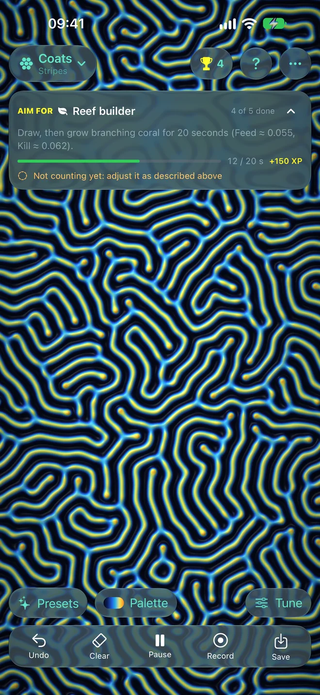
SIX LIVING SYSTEMS
Draw a line and watch zebra stripes, leopard spots or branching coral grow out of the reaction-diffusion maths Alan Turing proposed in 1952.
Every bird follows three simple rules and there is no leader. Draw a path to guide the flock, or press and hold to become the falcon.
Thousands of pigment sacs open and close like a cuttlefish’s chromatophores. Tap to send a ripple, drag to paint, hold for a warning flash.
150,000 virtual cells lay and follow trails. Place oat flakes and the slime mould links them into an efficient network; scatter salt and it steers around.
Hundreds of fireflies nudge each other’s clocks until the meadow flashes as one. Flash a lantern, become the pacemaker, blow wind through the grass.
Seeds are placed at a turn angle, and only 137.5° packs them perfectly. Tune it by thousandths of a degree and watch the Fibonacci spirals appear.
LEARN WHILE YOU PLAY
Each mode has a short “Why?” card in plain language, a deep dive and a quiz. The biology is drawn from peer-reviewed research, not from guesswork.
A CLOSER LOOK
Actual App Store screenshots, from the six living systems to goals, quizzes and the game modes.
Scroll sideways for all ten screenshots.
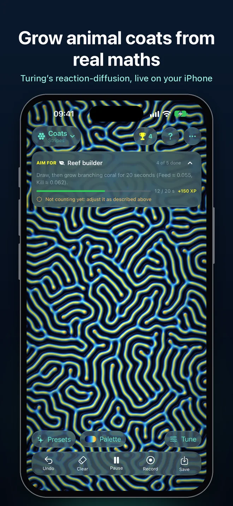
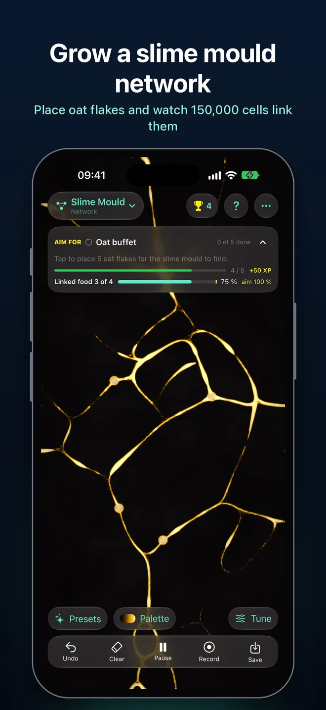
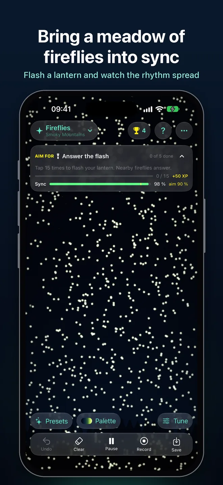
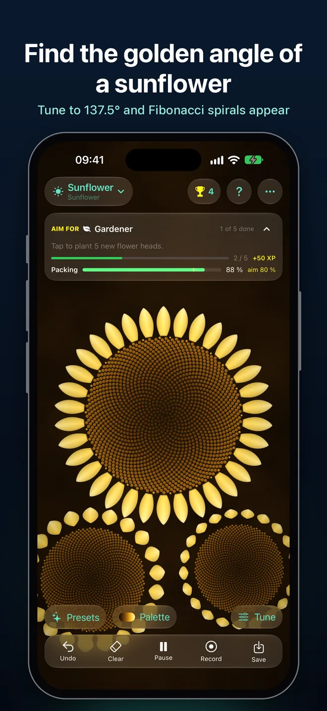
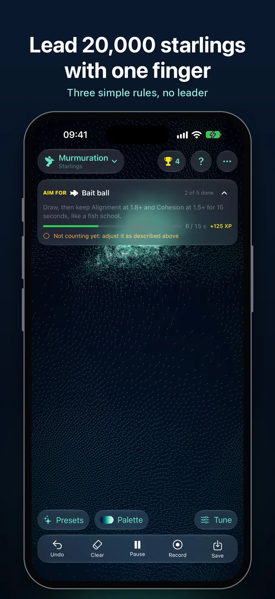
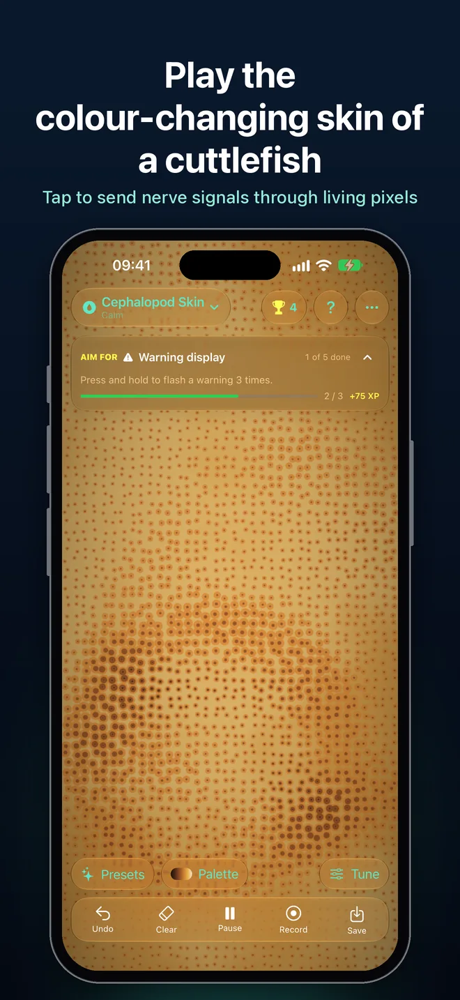
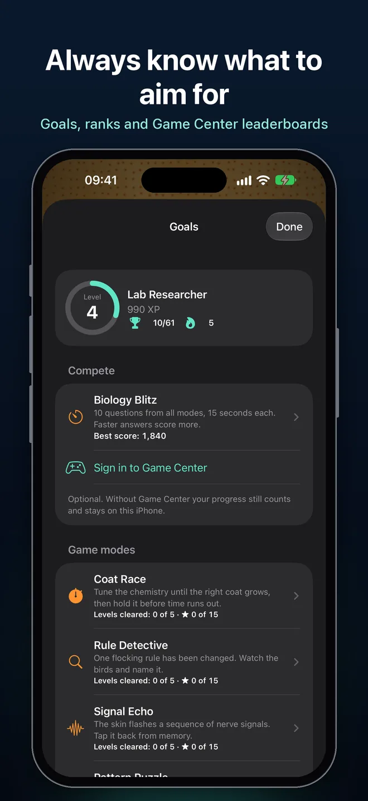
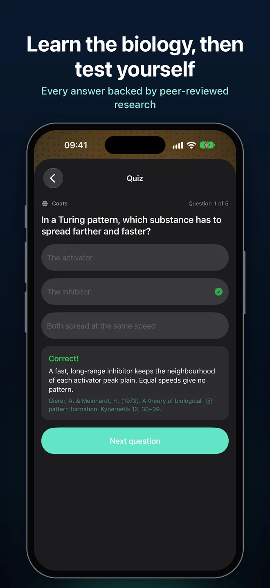
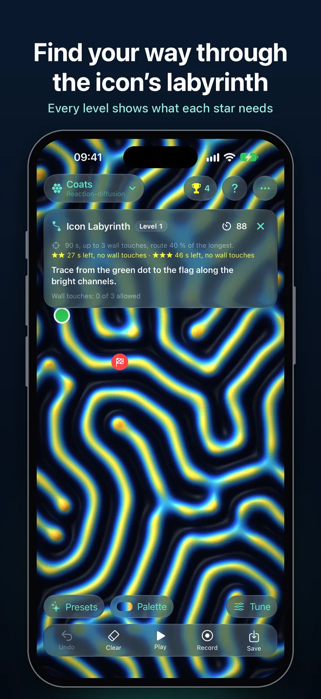
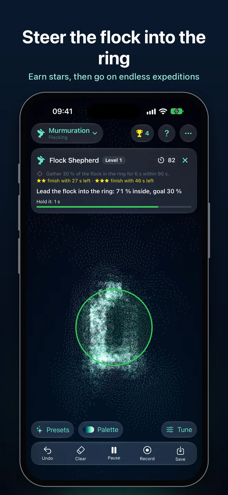
FREE TO TRY. ONE PRICE TO OWN.
Download free and play every living system, draw, move every slider and read every Why? card. Unlock Studio when you want the full set of creative tools.
€9.99 one-time purchase in Germany
Optional in-app purchase. Local prices may vary. No subscription, nothing renews. Family Sharing is supported.
Always free: every living system, drawing, every slider and every Why? card.
Read the app documentationPRIVATE BY DESIGN
Morphia collects no data. There is no account, no ads and no tracking. Your gallery and progress stay on your device.
Purchases use Apple’s App Store. Game Center is optional and uses Apple’s service when you sign in.
Read the privacy policyYes. The Apple Watch app brings the living systems to your wrist, including Coats, Murmuration, Cephalopod, Slime Mould, Fireflies and Sunflower.
Yes. Every mode is built on published models, such as Turing’s reaction-diffusion and the three flocking rules, and the Why? cards, deep dives and quizzes cite peer-reviewed research.
Morphia respects Reduce Motion and adds its own Reduce Flashing option. Fireflies flash at most 2.5 times per second, and Cephalopod warning flashes stay below three per second.
No. Goals, levels, stars and ranks all work without it. Sign in only if you want achievements and leaderboards.
Now. Morphia: Living Art is available on the App Store for iPhone, with a companion Apple Watch app.
Available now for iPhone and Apple Watch.